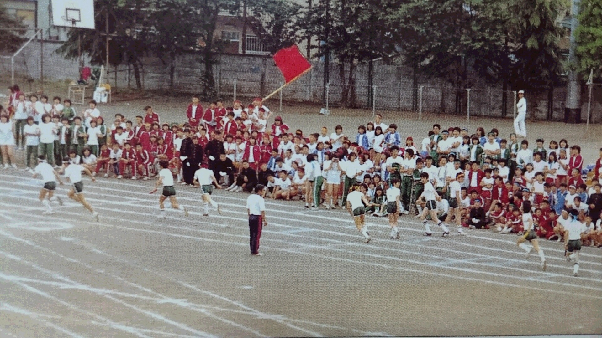

My Life
I really like my parents because they give me a very interesting childhood. Although I am born in Taiwan,I did not live in Taiwan for a long time. In fact, I move out of the country when I was grade one. Later, I have been moving among different countries and never stayed in one countries more than three years until I came to Canada. All of the experience living in different countries are precious to me nowadays
Early Time in Taiwan
Do you know where is Taiwan? People used to call this beautiful county Formosa, meaning the beautiful island. It is famous for its landscape, food, and is a great place to live. I was born in Taipei, the capital of Taiwan, and lived there until I leaved the country at the age of six. These six years are the root of my personality today. I am very sure that I can follow the rule very well and that is because my experience of taking sky-train in Taiwan. Although there is no line being draw on the platform, people will formed a line to go on the train. Compare to other countries, where people do know to let other people go on first but they never from a line, Taiwan does stand out and proves that its citizens are well educated. Also, thanks to my parents who let me to attend a bi-lingual preschool (Mandarin and English), I was able to know that Taiwan is not the only countries that I can live in. Since all of my teachers were from United State, I was able to recognize the different culture. Being only five years old, I learned to think wider and to not set limit on anything since I know the world is large with endless possibilities. I also understood that learning English was the first step to broaden my horizon
First Time Out of Taiwan
The first countries that I lived in other than Taiwan is Singapore. My parents brought me to Singapore because they heard that people can have better education there. Since I went to bi-lingual preschool, my parents thought I would be fine in the class. However, it turned out that my English is better than most of my classmates there but my Mandarin was not good enough. It was shock since Mandarin is my first language. However, the shock became a motivation for me to improve my Mandarin. I learned that people can get better after they experience a failure
Life in Japan
Japan might be a country that has the most effects on me. Although Japanese is my third language, I am fluent in it just like I am fluent in English and Mandarin. However, language is not the only thing I learned from living in Japan. Students in Japan, in my opinion, can work with their classmates better than students from any other countries. They are very good at team work because their school activities. I remembered within one academic year, school has many events that trained student's ability to work with others. Sport day is one of them. The sport day in Japanese elementary school usually divides students into four groups fairly. Then have these four groups compete with each other. The competition also required teamwork such as relay race that required the representatives from all grades to be the competitors. Another interesting school activity is a three day two night field trip. This kind of school activities are usually first seen in grade three because they required students to look after themselves. A class would be divided into several groups and each group will be working together throughout the three days. My first three days two night trip started from walking from school to the place that we would be living at night without the supervision of teachers. We were given a map and were expected to arrive at the destination by ourselves. After we arrived at the place, we also needed to make our own dinner. All of these required exceptionally good teamwork. I also trained my leadership skills during these kind of activities because I always volunteer to be a group leader
Harsh Environment in China
After studying in China for 2 years from grade two to grade three, I am sure that I can handle all of the study for the rest of my life. Despite I studied in many different countries already, I was shock about the work load of the students there. I entered a private elementary school in China when I was grade two and I was already behind in all subject, except English, by the time. I could only write few Chinese character but my classmates could compose an essay already. I could only do plus and minus for a reasonably small number but my classmates could do multiple and divide already. Needing to catch up, I was not able to enjoy life and have extracurricular activities. I spent most of my time on studying and doing homework. Even worst, the homework could be more if I got bad mark on tests. I remember one time I got 75 on a test which leads to writing down each answer of the questions that I got wrong 250 times as homework. The idea was for every one mark deducted, students had to write the answer down ten times. Thus, if one got zero on the test, he will end up writing all the answer down one thousand times each. The two years in China, eventually, trained me to be able take on huge work load and fighting time pressure efficiently
A Huge Part of My Life - Canada
Interestingly, I lived in Canada longer than any countries that I been to. In addition, I am currently both Canadian and Taiwanese. Yes, I have passports from both countries. During my time in Canada, I made several life changing decisions. First, in my high school, I decide to start a new instrument, viola. Since I knew piano by the time, learning viola was not hard. While participating in school's string orchestra, I also made a lot of friend. After playing in several concert together, we became very closed friends. These friends also became to play important roles in my life. For example, one of my friends invited me to tried a part time job, which let me to realize how hard it is to earn money. Another big decision I made is the university that I want to attend. After I took AP Computer Science in school, I realized I like coding very much. Eventually, I decide to go to University of Waterloo where is famous for its computer science courses and co-op program. One take away from all of the decision that I made is to be responsible. My parents always support my decision and help me whenever they can but they always ask me if I can be responsible for my decisions. Therefore, I always consider what are the effects of my decisions. I became more responsible for myself and more independent thanks to my life in Canada